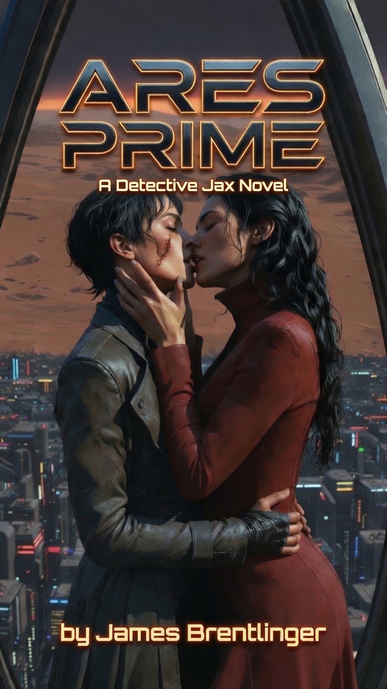

CASE SUMMARY: THE SILVER-EYED CEO
"Dawn on Mars was a lie. The red dust of Ares Prime didn't just coat the boots; it coated the soul."
On the unforgiving colony of Mars, breathing is a luxury only the elite can afford. When a high-ranking corporate executive is found surgically mutilated in the billionaire-exclusive Zenith Domes, hardened lower-sector Detective Jax is thrust into a dangerous, electrifying alliance with the company's untouchable CEO, Elara Vance.
Forced to navigate a labyrinth of cartel violence, dark-web frame-jobs, and a magnetic, undeniable attraction that challenges Jax’s deepest emotional walls, the gritty cop and the ruthlessly capable billionaire must race to unravel a terrifying conspiracy. With two hundred thousand innocent lives hanging in the balance and enemies hiding in the highest echelons of power, Jax must decide if she can finally drop her armor and trust the woman who rules the world she despises—before the red dust buries them all.
Preview Chapter Guide
Chapter One: The Red Dust
Detective Jax leaves the subterranean warrens of Sector 4 to investigate a high-profile homicide in the climate-controlled luxury of the Zenith Domes. She discovers Marcus Tyrell's cauterized remains.
Chapter Two: The Owner
Billionaire CEO Elara Vance overrides precinct protocols and confronts Jax directly at the crime scene. Vance hands over raw, encrypted perimeter files, initiating a tense, complicated partnership.
Chapter Three: The Bureaucracy
Jax returns to the copper-tasting air of Precinct 12 in Sector 4. Captain Graves gives her 72 hours to solve the murder before Vance Interplanetary's private security forces seize the files.
SECURE PROFILES: BIOMETRIC RECOGNITION (CLICK AVATAR FOR ID CARD)
DETECTIVE JAX
Background: Survived the Tantalus Mine cave-in at age 14 which claimed her parents. Spent 15 years in lower-sector homicide. Stubborn, cynical, and wears a worn synth-leather trench coat. Struggles to maintain her professional armor against Elara Vance's magnetic presence, finding her detective's instincts constantly challenged by their intense, mutual attraction.
ELARA VANCE
Background: The heir to the Martian terraforming empire. Possesses metallic neural-lace implants and striking genetically modified icy silver eyes. Exudes predatory corporate grace. Behind her corporate shell lies a growing obsession with Detective Jax, whom she chooses to help directly rather than hiding behind her legal shield.
LORE ARCHIVES: THE WORLD OF ARES PRIME
Ares Prime is a hard science-fiction tech-noir thriller set on Mars. The narrative balances a high-stakes corporate conspiracy with a slow-burn sapphic romance, detailing how two women from opposite ends of a divided planet collide.
INTIMACY IN THE COLD: COLLISION OF CLASSES
The relationship between Detective Jax and CEO Elara Vance represents the ultimate clash of Martian status. Jax, born in the subterranean mining tunnels of Sector Four, has spent her life breathing recycled rust. Elara, owner of the atmospheric grid, lives in localized Earth gravity surrounded by imported marble. Their electric connection pierces through their respective armor, forcing them to trust each other in a world where vulnerability is fatal.
OXYGEN AS CAPITAL: THE GEOGRAPHY OF SURVIVAL
In the colonies of Mars, atmospheric pressure and air quality are corporate commodities. The Zenith Domes house the executive elite under localized gravity plates and distilled glacial water. Beneath them lie **The Warrens of Sector Four**, where structural failures are common, gravity is Martian-standard (0.38g), and citizens breathe thin, recycled sludge that smells of old copper pennies.
THE TECH-NOIR ATMOSPHERE
Technology on Mars is invasive and biometric. Corporate executives track their vitals in real-time via quantum-entangled relays mapped directly to Vance security grids. Cybernetic neural-laces line temples to process data streams, while military-grade Class-4 surgical lasers double as weapons. Crime is no longer spontaneous; it is cauterized, corporate-sponsored, and monitored.
CREATOR DOSSIER: JAMES BRENTLINGER

James Brentlinger is an author of speculative sci-fi novels and hard-boiled cyber-noir mysteries. His writing explores the dark corners of technological advancement, focusing on industrial espionage, socio-economic divides in space colonies, and the resilience of characters born in resource-starved outer colonies.
Brentlinger's work combines hard science concepts with the tight, rhythmic pacing of detective noir. Prior to writing Ares Prime, he authored the acclaimed Dark Eyes Trilogy (featured at youwillsee.us), which follows a forgotten survivor's rise to lead a revolution against an elite class that uses cybernetic filters to ignore the poor.
Author's Philosophy
"In science fiction, we often focus on the marvels of progress. But in Ares Prime, I wanted to focus on the pipeline. Who maintains the atmospheric valves? Who mines the ice? The contrast between a penthouse executive who doesn't even know what dust tastes like, and a detective who was buried under collapsed bedrock in the mines, is where the story breathes."
Published Bibliography
Set thirty years after the catastrophic Amber Pulse, The Dark Eyes Trilogy follows Elara’s transformation from a forgotten survivor in the impoverished Shadow Sump to the leader of a full-scale revolution against the elite Apex Tiers. In a brutally stratified world where the wealthy use cybernetic implants to literally filter the poor out of their vision, Elara must weaponize the world's mutated, oil-like electrical energy to force the ruling class to open their eyes. Featured at youwillsee.us.
On the unforgiving colony of Mars, breathing is a luxury only the elite can afford. When a high-ranking corporate executive is found surgically mutilated in the billionaire-exclusive Zenith Domes, hardened lower-sector Detective Jax is thrust into a dangerous, electrifying alliance with the company's untouchable CEO, Elara Vance. Forced to navigate a labyrinth of cartel violence, dark-web frame-jobs, and a magnetic, undeniable attraction that challenges Jax’s deepest emotional walls, the gritty cop and the ruthlessly capable billionaire must race to unravel a terrifying conspiracy. With two hundred thousand innocent lives hanging in the balance and enemies hiding in the highest echelons of power, Jax must decide if she can finally drop her armor and trust the woman who rules the world she despises—before the red dust buries them all.